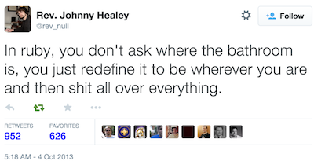
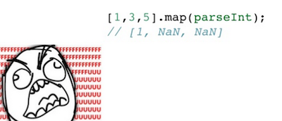
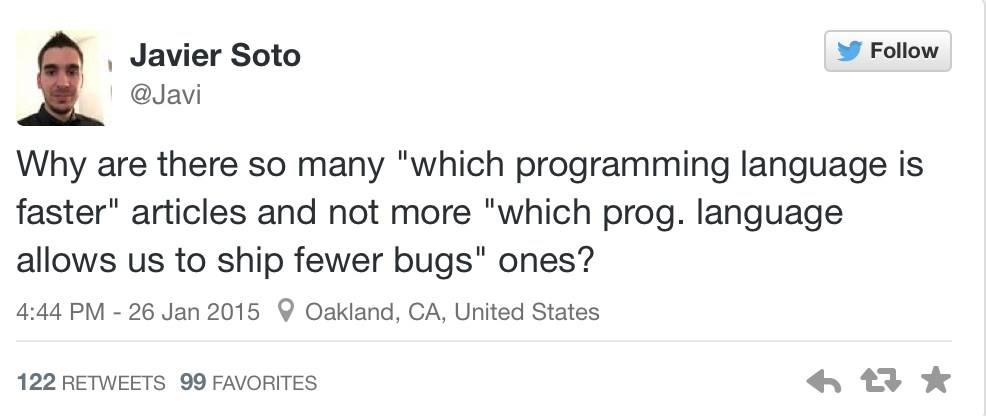
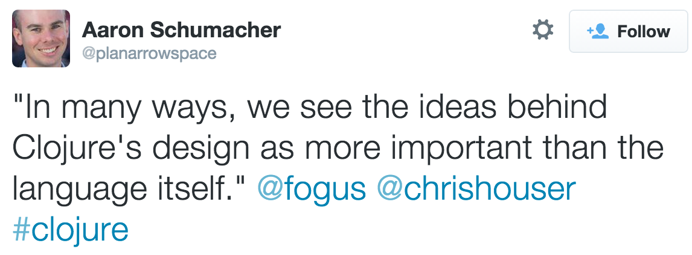
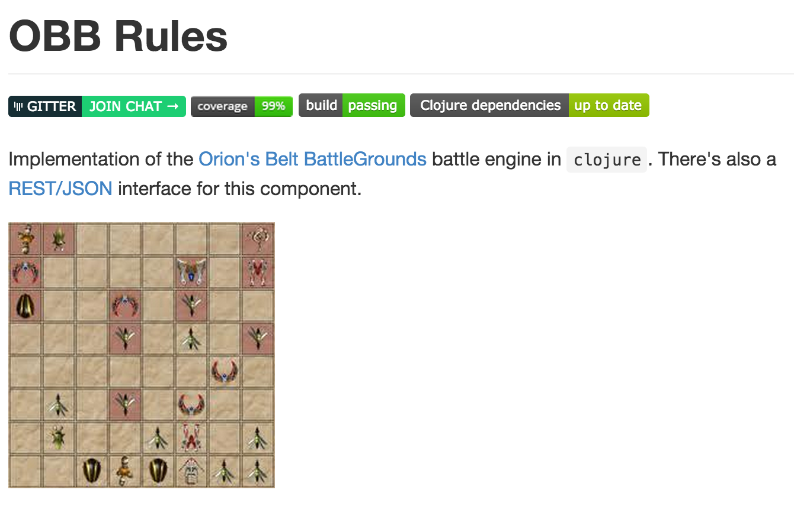
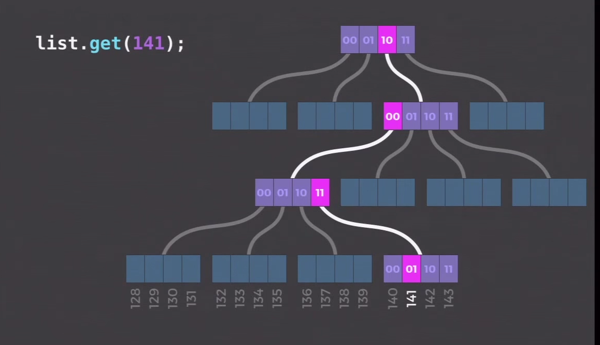

Road to Clojure (Script)
Pedro Pereira Santos
Current Scenario
The good, the bad and the ugly
Ruby
JavaScript
Scala
object ChristmasTree extends DecorationBuilder {
def main(args: Array[String]) {
\-/.
-->*<--
.
/.\
./.|.\.
/.oxo.\
./.*.|.x.\.
/.oo.|.oo.\
./.oxo.|.***.\.
/.*.oo.|.*.oo.\.
|||
}
}
Clojure ?!?!
(and) ; true
(or) ; nil
(keys {}) ; nil
(vals {}) ; nil
(:foo {}) ; nil
({} :foo) ; nil
(:foo nil) ; nil
(:foo 1) ; nil
(:foo "well ok") ; nil
I can see bad code
Where's the holy grail?
Focus
Clojure Mindset
Me, Clojure and Myself
What is Clojure?
- A programming language
- Very young (since 2009)
- A dialect of LISP
- Host-focus: JVM, JavaScript, CLR
- Concurrency-minded
Functional programming
- First-class functions
- Immutable Data Structures
- Emphasizes recursive iteration instead of side-effect based looping
- Pure functions
Paradigm crash
Comming from the OO world, we need to learn a new set of skills to implement trivial stuff.
Paradigm crash
Returns the sum of the elements or 42 if any element is 42
function sup(coll) {
var sum = 0;
for(var i = 0; i < coll.length; ++i) {
var data = coll[i];
sum += data;
if(42 === data) {
return 42;
}
});
return sum;
}
Ups!
function sup(coll) {
var sum = 0;
for(var i = 0; i < coll.length; ++i) { // forget iteration
var data = coll[i];
sum += data; // mutation is evil
if(42 === data) {
return 42; // return is not available
}
});
return sum;
}
Clojure v1
(defn sup [coll]
(or (some #{42} coll) (reduce + coll)))
(sup [1 2 3]) ; 6
(sup [1 42 3]) ; 42
Clojure v2
(defn sup [acc curr]
(if (= curr 42)
(reduced 42)
(+ acc curr)))
(reduce sup [1 2 3]) ; 6
(reduce sup [1 42 3]) ; 42
There be dragonz!

Immutability
Shared mutable state is the root of all evil
Pure functions
A pure function is a function where the return value is only determined by its input values, without observable side effects.
- No side effects
- No I/O
Not pure
def finalize_document(id)
invoice = Invoice.find(id)
invoice.validate
invoice.sign_stuff
invoice.change_state
invoice.calculate_totals
invoice.send_document_to_at
invoice.save!
end
More pure
def as_finalized(invoice)
invoice = invoice.clone()
invoice.validate
invoice.sign_stuff
invoice.change_state
invoice.calculate_totals
invoice
end
def finalize_document(id)
invoice = Invoice.find(id)
finalized = as_finalized(invoice)
finalized.send_document_to_at
finalized.save!
end
Structural Immutability
- Performance
- Thread-safety
Hash Array Mapped Trie
When immutable is faster
(time (doall (map #(Thread/sleep (* % 5000)) [1 1 1])))
"Elapsed time: 15002.949 msecs"
(time (doall (pmap #(Thread/sleep (* % 5000)) [1 1 1])))
"Elapsed time: 5001.336 msecs"
Clojure (Script) in the Wild
Who's using it?